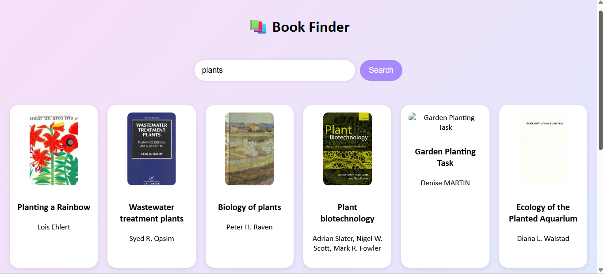
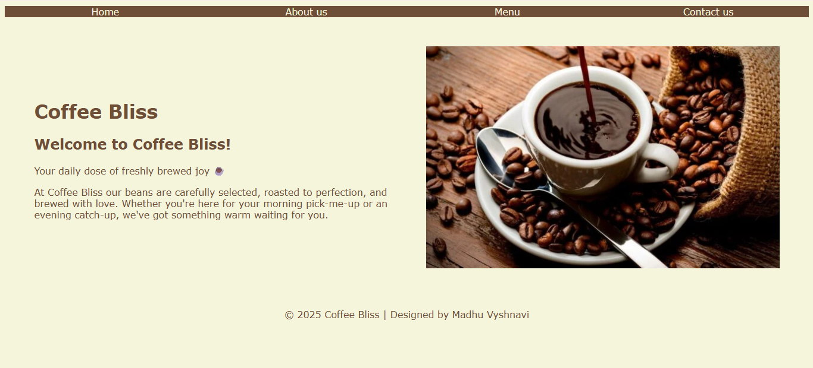

All Projects

MGNREGA District Tracker
Accessing government data can often be confusing and hard to interpret. This dashboard makes it simple to explore district-wise info.
Tech Stack
HTML, CSS, JavaScript, APIs

Book Finder App
This React-based app allows users to search for books and instantly view results in a clean, card-based layout.
Tech Stack
React.js, APIs, CSS

Coffee Bliss – Coffee Shop Website
Small businesses often need a simple yet appealing online presence. This project creates a clean, image-focused website.
Tech Stack
HTML, CSS